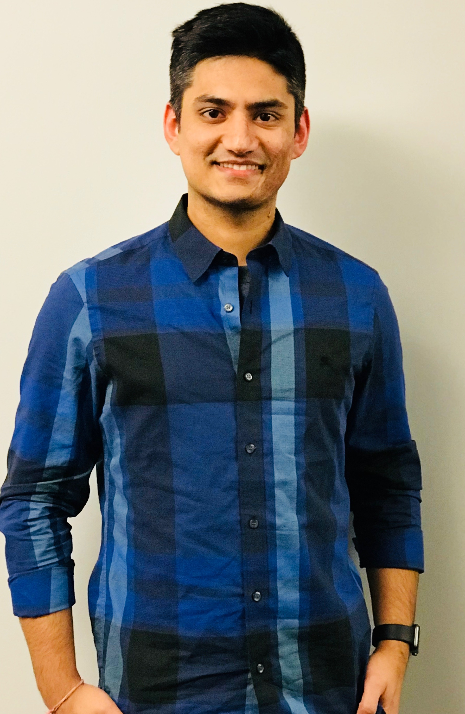

About Me
After a successful season with Sporting that brought the young player to the attention of Europe’s biggest football clubs, Ronaldo signed with English powerhouse Manchester United in 2003. He was an instant sensation and soon came to be regarded as one of the best forwards in the game. His finest season with United came in 2007–08, when he scored 42 League and Cup goals and earned the Golden Shoe award as Europe’s leading scorer, with 31 League goals. After helping United to a Champions League title in May 2008, Ronaldo captured Fédération Internationale de Football Association (FIFA) World Player of the Year honours for his stellar 2007–08 season. He also led United to an appearance in the 2009 Champions League final, which they lost to FC Barcelona.
After a successful season with Sporting that brought the young player to the attention of Europe’s biggest football clubs, Ronaldo signed with English powerhouse Manchester United in 2003. He was an instant sensation and soon came to be regarded as one of the best forwards in the game. His finest season with United came in 2007–08, when he scored 42 League and Cup goals and earned the Golden Shoe award as Europe’s leading scorer, with 31 League goals. After helping United to a Champions League title in May 2008, Ronaldo captured Fédération Internationale de Football Association (FIFA) World Player of the Year honours for his stellar 2007–08 season. He also led United to an appearance in the 2009 Champions League final, which they lost to FC Barcelona.